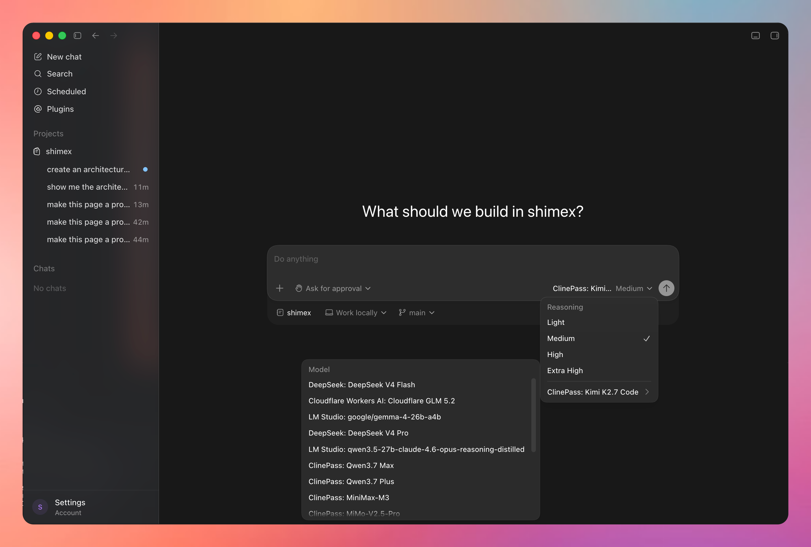

Shimex sits between Codex Desktop and any LLM provider — Anthropic, DeepSeek, Ollama, LM Studio, Cloudflare Workers AI, ClinePass — behind an OpenAI-compatible HTTP daemon. Your original Codex install is never modified.

http://127.0.0.1:18765/admin./Applications/Codex.app into a managed Shimex.app with an isolated profile and model catalog. The original Codex app stays untouched.http://127.0.0.1:18765/v1: /v1/chat/completions, /v1/responses, /v1/models, and a Codex picker catalog..env and are referenced via auth: { type: env, name: … }.macOS with Codex Desktop installed at /Applications/Codex.app, Node 20+, npm 10+.
git clone https://github.com/Ansonhkg/shimex.git ~/Projects/shimex
cd ~/Projects/shimex
npm install
cp .env.example .env # add your API keys; .env is git-ignored
npm start # prepares Shimex.app, launches the daemon at :18765Then open the managed Shimex.app and the admin UI at http://127.0.0.1:18765/admin.
npm run status # PID, log path, health
npm run shimex -- doctor # prerequisite check
npm run shimex -- providers list # configured providers
npm run shimex -- models list # discovered modelsShimex is an unofficial, source-preserving companion project. Codex Desktop is a third-party product of OpenAI.